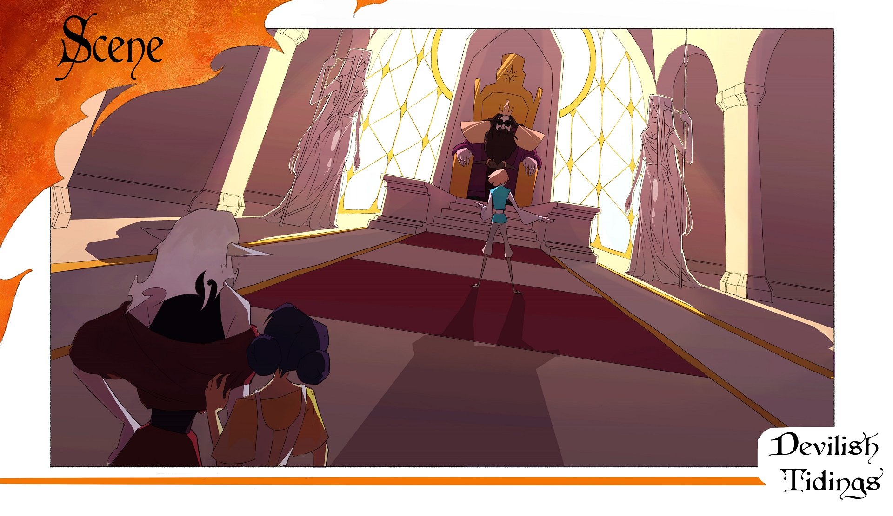
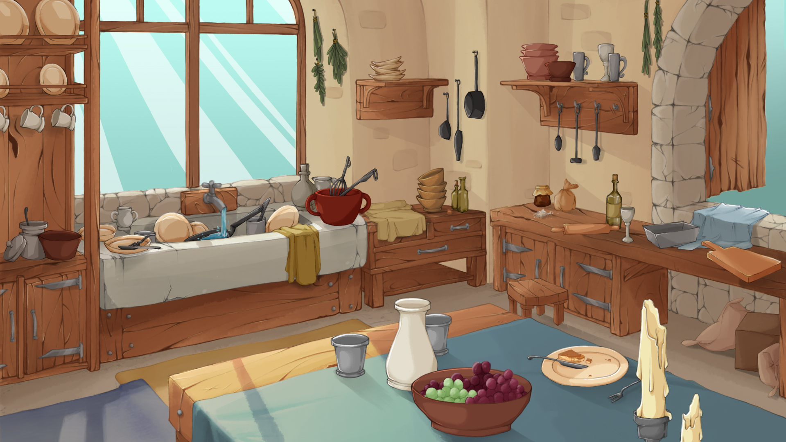
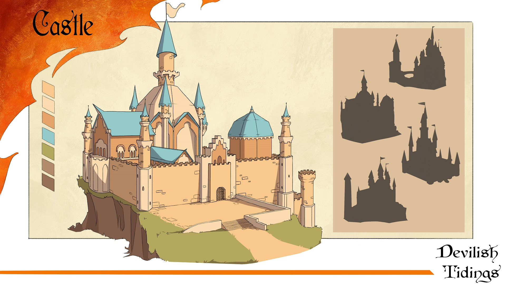
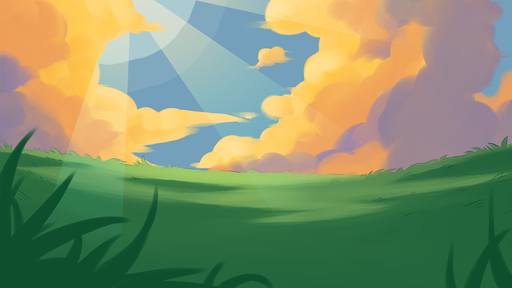
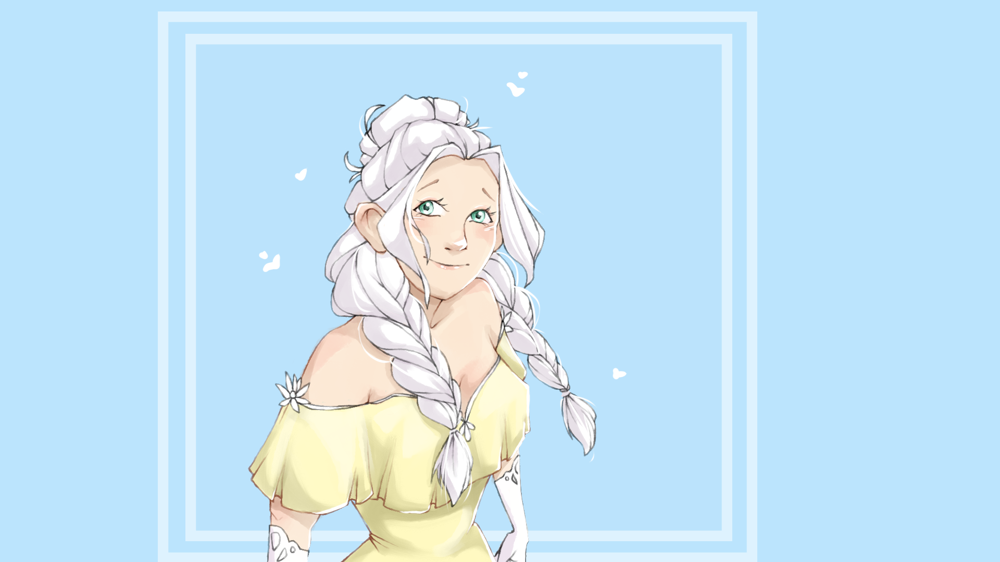
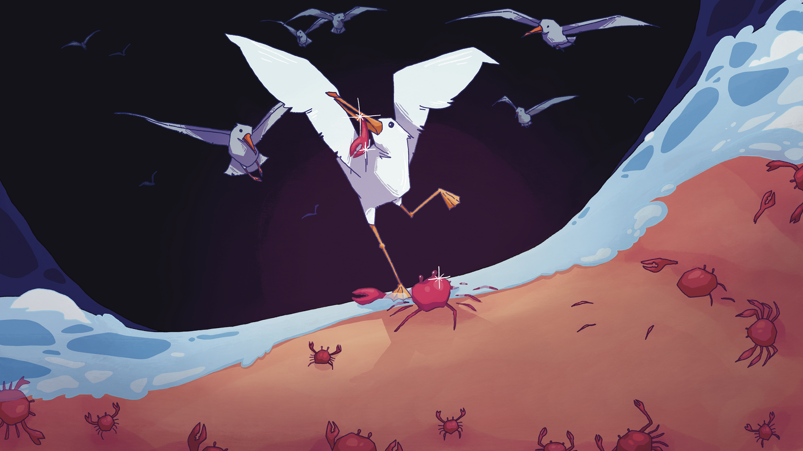
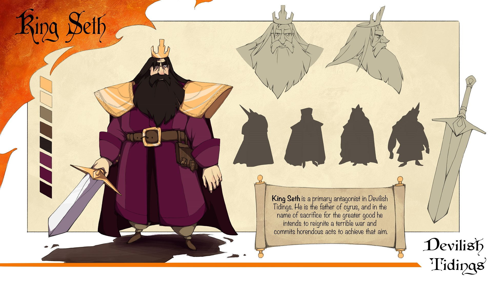
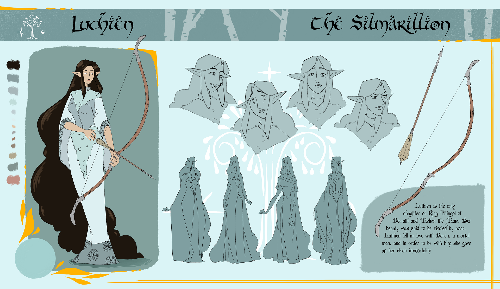
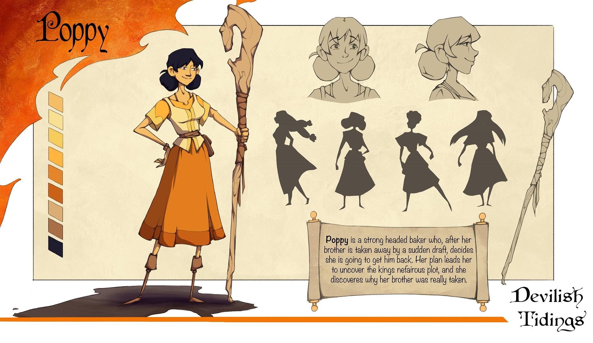

Tulasi Napolitani - The Musician
Hi! My name is Tulasi and I am an animation major hoping to specialize in character and effects animation! ! I spend a lot of my free time writing music (hence the card selection) and am super enthusiastic about DND and reading and fantasy. I have also been working to develope a show for the past five or so years (which my senior project is related to) so hopefully I'll be able to at least make a pilot episode in my lifetime :)) No matter what happens, I know that art will always be an inseperable part of me. I'm so excited (and scared) to see where life takes me post graduation!!









